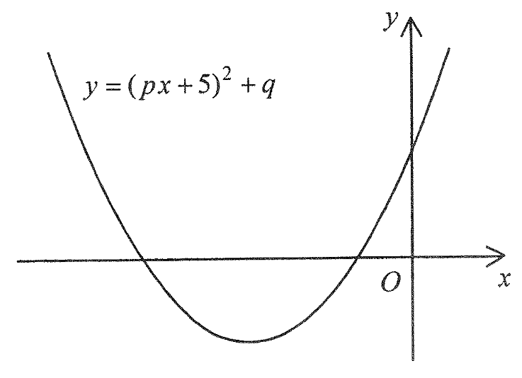

Functions and Graphs — reading the signs of \(p\) and \(q\) from a parabola \(y=(px+5)^2+q\)
The figure shows the graph of \[y=(px+5)^2+q,\] where \(p\) and \(q\) are constants.
Which of the following is true?
From the figure: the parabola opens upwards and its vertex lies in Quadrant III (i.e. \(x_v<0\) and \(y_v<0\)).

Complete the reading of the vertex and the sign of \(p\) from the shape of the parabola.
Factor \(p\) out of the bracket to expose the vertex form:
\[y=(px+5)^2+q=p^2\left(x+\frac{5}{p}\right)^2+q.\]So the vertex is
\[\left(-\frac{5}{p},\; q\right).\]From the figure the vertex lies in Quadrant III, so both coordinates are negative:
\[-\frac{5}{p}<0 \quad\text{and}\quad q<0.\]From \(-\dfrac{5}{p}<0\), and since \(-5<0\), we need a negative denominator:
\[p<0.\]Test each option on the graph. Move the sliders to see when the vertex actually lands in Quadrant III.
For the vertex to lie in Quadrant III we need both \(-\frac{5}{p}<0\) and \(q<0\).
Equivalently \(p<0\) and \(q<0\) — exactly Option D.
Check Option C (\(p>0,\ q<0\)): then \(-\frac{5}{p}<0\) still holds, but the vertex would be \(\left(-\tfrac{5}{p},\ q\right) = \text{(negative, negative)}\)… wait — that is Quadrant III. Re-examine the figure: the parabola’s minimum visibly sits to the left of the y-axis while descending, so the x-coordinate of the vertex is negative, requiring \(p<0\).
Check Options A and B: they claim \(q>0\), i.e. the vertex is above the x-axis. But the figure shows a minimum below the x-axis, so \(q>0\) is impossible.